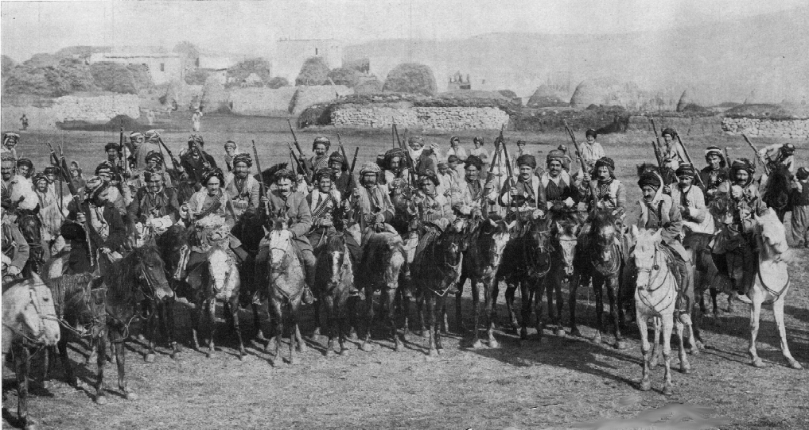
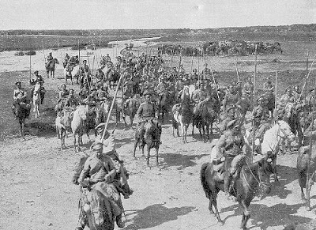

 The battles in the Middle East continued, and now the Ottomans faced an Arab revolt, which gave the Entente more soldiers to help them in that theatre. The British were also able to protect the Sinai Canal and were able to start pushing towards Palestine. The battles continued on in the Mesopotamia, while in the Caucasus the Russians made advances and due to harsh winter conditions the battles in that region would halt until 1917.
The Russians would have another big victory, and would be their last major success of WW1. The Germans and Austrians were busy in the Western Front and Italy, respectively. Many of their troops were moved to accommodate this, making the Eastern Front weaker. The Russians would launch the Brusilov Offensive in Poland. The Brusilov Offensive was a massive victory initially, it would make the Germans leave Verdun to defend their eastern border. The Austria-Hungarians were broken after this conflict. Over 500,000 wounded or dead and 400,000 prisoners. The Germans were able to push back and the Offensive would slow down.
The Russians would also have massive casualties ranging from 500,000 to 1,000,000. This would be the final victory for the Russians, as their casualties and weariness of war were putting a toll on the Russian Empire. By early 1917 The Russians would be in revolution, removing them from the war and allowing Germany and Austria-Hungary a chance to fight only on the West. During 1916 Romania would also join the war on the side of the Allies. Their battles would force Germans and Austria-Hungarians into a stalemate. The Romanian front would not have the same impact as the Russian’s offensive, but another ally against the central powers would be a problem.